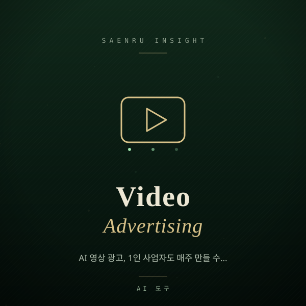

AI 영상 광고, 1인 사업자도 매주 만들 수 있을까?
AI 영상 생성 도구로 소상공인·1인 빌더가 매주 광고 소재를 뽑는 현실적인 방법과 주의점을 정리했습니다.

지난 몇 년간 AI 콘텐츠의 중심은 글이었습니다.
그런데 최근 광고 채널의 무게추는 확실히 영상으로 넘어갔습니다.
인스타그램 릴스, 유튜브 쇼츠, 네이버 클립 어디를 봐도 세로 영상이 기본값이 됐고, 이 흐름을 따라가려면 소재를 매주 새로 만들어야 합니다.
문제는 촬영과 편집에 드는 시간과 비용이죠.
그래서 요즘 작은 팀들이 가장 활발하게 실험하는 영역이 AI 영상 생성입니다.
Runway, Google Veo, OpenAI Sora 같은 영상 모델, HeyGen 같은 아바타 도구, ElevenLabs 같은 음성 도구, 그리고 Canva나 CapCut 같은 편집 도구가 한 줄로 연결되면서 '1인 제작 파이프라인'이 실제로 돌아가기 시작했습니다.
오늘은 이걸 무엇부터, 어떻게 시작해야 실패하지 않는지 정리해 보겠습니다.
AI로 만든 영상, 지금 실무에 쓸 만한가?
짧고 반복적인 소재라면 이미 충분히 쓸 만합니다.
다만 브랜드를 대표하는 메인 영상 하나를 통째로 맡기기에는 아직 이릅니다.
AI 영상의 강점은 '영화 같은 완성도'가 아니라 같은 메시지를 여러 버전으로 빠르게 찍어내는 반복 생산력이라고 보는 편이 정확합니다.
실무에서 체감되는 경계선은 대체로 이렇습니다.
- 지금 잘 되는 것: 제품 컷을 움직이게 만드는 짧은 클립, 배경·계절만 바꾼 A/B 소재, 자막 중심의 정보형 쇼츠, 대본만 있으면 되는 아바타 안내 영상, 외국어 버전 더빙
- 아직 어려운 것: 실제 매장과 직원이 그대로 나와야 하는 신뢰형 영상, 손으로 제품을 정교하게 다루는 장면, 화면에 한글 텍스트를 정확히 새기는 작업, 여러 컷에 걸쳐 같은 인물·같은 제품을 완벽히 일관되게 유지하는 것
즉 '진짜처럼 보여야 하는 장면'은 여전히 촬영이 유리하고, '변주가 많이 필요한 장면'은 AI가 유리합니다.
둘을 섞는 하이브리드가 현실적인 답입니다.
무엇부터 만들어야 실패하지 않나?
가장 안전한 출발점은 이미 성과가 검증된 기존 소재의 변주입니다.
처음부터 새 콘셉트를 AI로 창작하려 들면 결과물이 마음에 들 때까지 크레딧만 태우게 됩니다.
잘 팔린 게시물 하나를 골라 그 구조를 유지한 채 배경·문구·모델만 바꾸는 방식으로 시작하세요.
예를 들어 수제 그래놀라를 파는 1인 쇼핑몰이라면 이런 순서로 돌릴 수 있습니다.
- 기준 소재 선정: 지난달 저장 수가 가장 높았던 게시물 1개를 고른다.
- 대본 쪼개기: 15초를 3컷으로 나눈다.
후크(요거트에 붓는 장면) → 근거(재료 클로즈업) → 행동 유도(주문 화면). - 정지 이미지 먼저: 각 컷의 첫 프레임을 이미지로 확정한다.
영상부터 만들면 수정 비용이 훨씬 크다. - 이미지를 영상으로: 확정된 이미지를 입력으로 짧은 클립을 생성한다.
카메라 움직임은 '천천히 줌인' 정도로 단순하게 지시한다. - 편집에서 마무리: 자막, 로고, 실제 제품 사진 한 컷을 얹는다.
진짜 제품 컷이 한 장이라도 들어가면 신뢰도가 크게 올라간다.
여기서 핵심은 3번입니다.
텍스트에서 곧바로 영상을 만드는 방식보다, 이미지를 먼저 확정하고 그 이미지를 움직이게 하는 방식이 결과 예측이 쉽고 재생성 횟수도 줄어듭니다.
비용과 법적 리스크는 어떻게 관리하나?
AI 영상은 결과가 마음에 안 들면 다시 뽑게 되고, 그 재생성이 곧 비용입니다.
그래서 월 크레딧 상한을 미리 정하고 1편당 재생성 횟수를 제한하는 규칙을 두는 게 실질적인 절약법입니다.
여기에 광고로 쓰는 순간 따라오는 법적 체크가 몇 가지 있습니다.
- 상업적 이용 범위 확인: 도구마다 무료 플랜은 상업적 사용을 제한하는 경우가 있습니다.
광고 집행 전 요금제 약관을 반드시 확인하세요. - 사람 얼굴과 목소리: 실제 직원이나 고객을 모델로 아바타·음성을 만들 때는 서면 동의를 받아 두세요.
유명인을 닮은 결과물은 아예 피하는 게 안전합니다. - 과장 표현 주의: AI는 실물보다 예쁜 장면을 잘 만듭니다.
실제 제품과 크게 다른 모습이나 없는 효능을 연상시키는 연출은 표시광고 이슈로 이어질 수 있습니다. - AI 생성 표시: 플랫폼에 따라 합성 콘텐츠 표시 옵션을 제공합니다.
신뢰를 잃는 것보다 밝히는 편이 낫습니다. - 원본 보관: 사용한 프롬프트와 생성 파일을 폴더로 남겨 두면, 성과가 좋았던 조합을 다음 달에 그대로 재사용할 수 있습니다.
정리하면 AI 영상은 '외주를 대체하는 마법'이 아니라 '실험 횟수를 늘려 주는 도구'입니다.
이번 주에 딱 한 가지만 해 보세요.
성과가 가장 좋았던 게시물 하나를 골라 배경만 바꾼 버전 세 개를 만들어 돌려 보는 것. 어떤 변주가 먹히는지 감이 잡히면, 그때부터 파이프라인을 늘려도 늦지 않습니다.